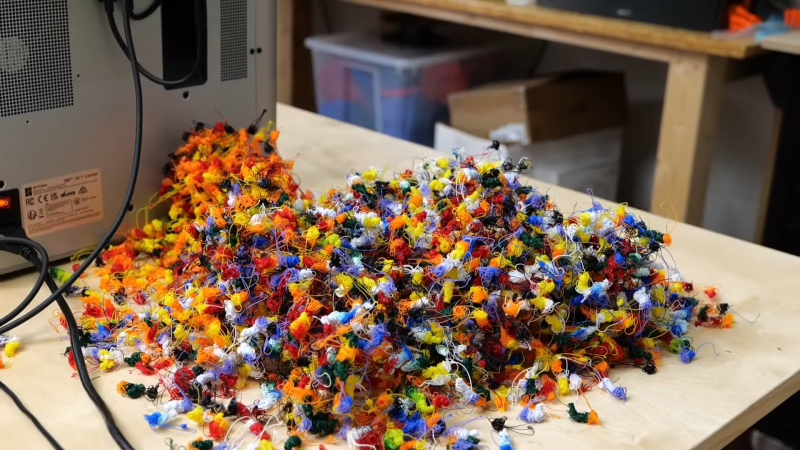

Pro letošní vítěze TEOL 2025 se lektoři rozhodli vytvořit
barevné trofeje, které budou vytištěny na 3D tiskárně Prusa
MK4S vybavené multimateriálovou jednotkou (MMU). Tento
inovativní přístup umožňuje tisknout objekty s různými
barvami nebo materiály v rámci jednoho výtisku.
Multimateriálový 3D tisk je stále relativní novinkou
a často se stává předmětem diskusí zejména kvůli vysokému
poměru odpadu ve srovnání s reálným objemem vytisknutého
objektu. Základním principem této technologie je výměna
filamentu během tisku, která probíhá vždy, když je nutné
změnit barvu nebo typ materiálu. Tato výměna se obvykle
provádí u každé vrstvy, což přináší výraznou flexibilitu
při designu.

Proces tisku však zahrnuje značné nevýhody. Při každé výměně
filamentu dochází k odpadu, který vzniká pročištěním
tiskové hlavy, aby byl zajištěn plynulý tok nového materiálu
bez kontaminace předchozím filamentem. Tento odpad je
nevyhnutelný, ale mnozí uživatelé se snaží jeho množství
minimalizovat optimalizací designu modelů nebo nastavením
tiskárny tak, aby došlo k menšímu počtu výměn.
Jednou z těchto optimalizací je například tištění kopií
stejného modelu ve stejný čas – když totiž vytisknete více
modelů najednou, odpad vzniklý z čištění trysky zůstává
stále stejný.
Design letošní trofeje bohužel nemůžeme předem sdílet, ale
můžeme poskytnout základní informace o vzhledu její části
(8 mm vysoké základny).
-
Červený filament bude potřeba od 0,4 mm do 2,2 mm a od
3,4 mm do 5,6 mm.
-
Modrý filament bude potřeba od 1,8 mm do 2,6 mm a od
3,2 mm do 7,0 mm.
- Zelený filament bude potřeba od 2,4 mm do 4,4 mm.
- Bílý filament je potřeba při celém tisku.
Předpokládejte, že k výměně filamentu dojde pouze při
přelomu vrstvy (pokud je filament potřeba od 1,0 mm,
k výměně dojde ve vrstvě od 1,0 mm do 1,2 mm).
Lektory by zajímalo, o kolik více procent filamentu bude
spotřebováno na čištění trysky, pokud by model byl tisknut
s výškou vrstvy 0,12 mm místo 0,20 mm. Ke kolika výměnám
dojde při tisku s výškou vrstvy 0,12 mm?